思维路线
目的是要链接互联网中的其他计算机
物理层 用物理介质链接其他计算机
数据链路层 用MAC地址来通讯,但仅限于同一局域网
网络层 用ip确定全球范围的某个局域网中的某一台计算机
传输层 用端口来确定 某一计算机中的某一个进程
应用层 组织自己的数据结构,例如json, xml等用于在两个应用程序间交换数据
一.C/S构架
二.网络通讯的基本要素
三.网络通讯协议
网络通常指的是计算机中的互联网,是由多台计算机通过网线或其他媒介相互链接组成的
编写基于网络的应用程序的过程序称之为网络编程
我们已经知道计算机,由硬件 操作系统,应用程序组成,有了这三个元素,就可以在自己的电脑上运行一些应用程序了,比如玩玩纸牌,扫扫雷什么的
如果要想与其他计算机一起玩,就必须要让你的计算机和其他计算机能够互相传递数据
小明和小芳是一对恋人,为了美好的未来,小明离开家乡,来到上海学习python,在这里小明看到了传说中的东方明珠电视塔,激动万分的他用手里的数码相机拍摄了照片,想要与远在老家的小芳分享,虽然小明和小芳的电脑连着一条网线,由于不会使用网络编程,小明只好骑着马儿,翻越千山万水,将照片送到小芳的手中,由于路途太远,小芳已经嫁人了,小明痛下决心一定要掌握网络编程,让下一个小芳在任何地方都能看到自己的照片
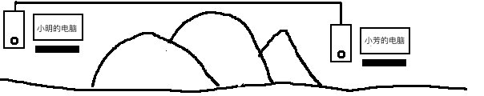
学习网络编程就是要学习利用网络来与另一台计算机相互传输数据, 开发出支持网络通讯的应用程序,这样即使足不出户也能尽知天下事
学习网络编程就是要通过网络来访问另一台计算的数据,这样必然需要至少两台计算机,一台计算机上放着要分享的数据和用于分享数据的程序,另一台计算机上运行访问数据的程序,
我们把提供数据的一方称之为服务器(Server),把访问数据的一方称为客户端(Client)
这就是C/S构架:
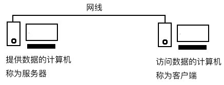
电脑上要看视频就需要装看视频的程序.例如腾讯视频,它就是客户端程序,腾讯公司的机房里运行着腾讯视频的服务器程序,所以它也是C/S构架的程序
另外浏览器也可以访问服务器上的网页数据,称之为B/S,其本质上也是C/S只不过客户端是浏览器
两台计算机要想通讯,必须要具备两个基本要素
1.物理连接介质,包括网线,无线电,光纤等
2.通讯协议
下面我们来分析为什么需要这两个东西
人类说话需要有空气来传播震动,眼睛要看东西需要有光来传播,没有空气,没有光,则无法沟通,(不要钻牛角尖,用手摸啥的...);光和空气就是物理介质
再比如电话机 要打通电话则必须先接通电话线,电流才能沿着电话线到达另一台电话机,电话线则是物理介质
协议就是标准,大家要遵循相同的标准才能正常交流通讯
两个人要交流,必须说双方都能理解的语言,想象一下一个说新疆话的人打电话给说闽南语的人,基本说了等于没说 双方都能理解的语言就是,就是标准,就是协议
在计算机中,链接介质 通常是网线,网线本质就是一条电线,可以传播电流,而电流可以按照强弱,被理解为0和1
那问题是,一台计算机被电了一下是什么意思?被电了两下又是什么意思? 这就必须由发送方和接收方共同商定出一套标准,从而可以知道0和1表示的含义
然而作为应用程序开发者,物理介质显然不是我们需要关心的,比如如何牵网线
所以通讯协议是我们学习的重点
协议是由发送方和接受方共同制定的,考虑到计算机已经发展了这么多年,所以制定的协议过程很显然我们没有机会参与了,要做的是了解通讯协议中的各种规定
Open System Interconnection Reference Model，开放式系统互联通信参考模型,缩写为OSI,是由国际标准组织推出的,其实就是一大堆协议,OSI把整个通讯过程划分为七层,简称OSI七层模型
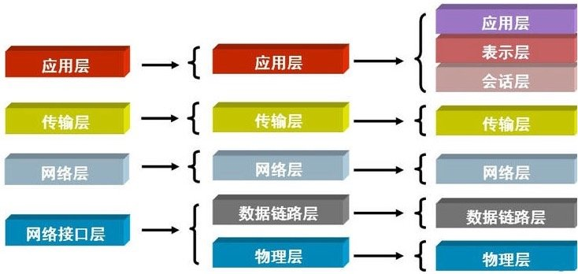
上图中最右边就是完整的七层模型,是最完整的通讯模型,虽然很详尽,但是整个通讯流程的复杂度较高,后期为了降低学习难度,将其进行了简化,于是又了中间的五层,和左边的四层
其中应用层,表示层和会话层都是属于应用程序层的,是一个整体,故将其合并为应用层,由此得到中间的五层,这是我们学习的重点!
早期各个计算机厂商都有自己的一套网络通讯协议,但是各不相同,导致了不同厂商的计算机之间无法进行网络通讯,就像下图一样,如果四川人说四川话,上海人说上海话,将无法通信,必须统一说普通话!
无论是四川还是上海都是中国人,如果只在中国内进行通讯,掌握了普通话就没问题了,但是要不要和其他国家的人通讯呢?
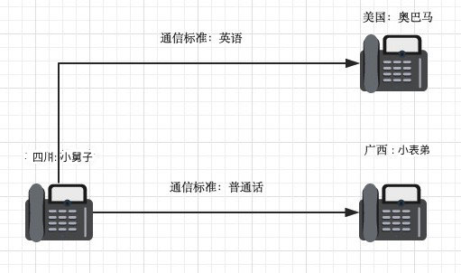
与不同国家的人通讯则需要掌握不同国家的语言,但是全世界有那么多国家和语言,不可能全部掌握,这就需要大家统一下了,找一种语言作为全世界通用语言,就是英语!
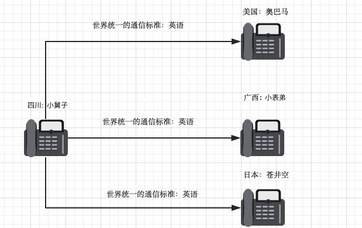
这样一来,只要你能听懂英语,会说英语,全世界的人都能通讯了
总结:OSI就是相当于计算机界的通用语言,只要按照OSI规定的标准来通讯,就能够与全世界任何一台所有计算机通讯
那这OSI种的七层到底是干什么的呢?
应用层,表示层,会话层都属于应用程序层面所以重点讨论简化后的五层;
为了方便理解,从下往上
物理层的由来,在通讯的基本要素一节已经讨论过了,两台原本相互独立的计算机,想要通讯,必须建立物理连接,连接的方式多种多样,包括电缆,光缆,无线电等;
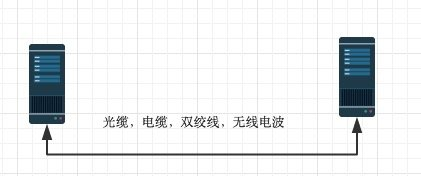
物理层的功能:基于电子器件发送电流信号,根据电流的高低可以对应到数字0和1,也就是二进制数据
数据链路层的由来:单纯的电信号0和1没有任何意义，必须规定电信号多少位一组，每组什么意思
以太网协议(Ethernet)工作在数据链路层,其规定了电信号分组方式,以及一组电信号应该包含哪些内容
ethernet规定如下:
一组电信号构成一个数据包，叫做‘帧’
每一数据帧分成：报头head和数据data两部分
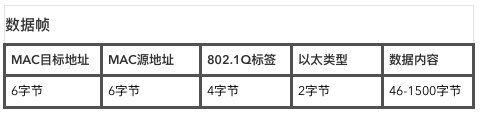
head包含：(固定18个字节)
data包含：(最短46字节，最长1500字节)
head长度＋data长度＝最短64字节，最长1518字节，超过最大限制就分片发送
head中包含的源和目标地址指的是什么地址呢?
ethernet规定接入internet的设备都必须具备网卡，发送端和接收端的地址便是指网卡的地址，即mac地址
mac地址：每块网卡出厂时都被烧制上一个世界唯一的mac地址，长度为48位2进制，通常由12位16进制数表示（前六位是厂商编号，后六位是流水线号）
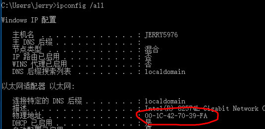
有了mac地址，同一网络内的两台主机就可以通信了
ethernet采用最原始的方式，广播的方式进行通信，即计算机通信基本靠吼
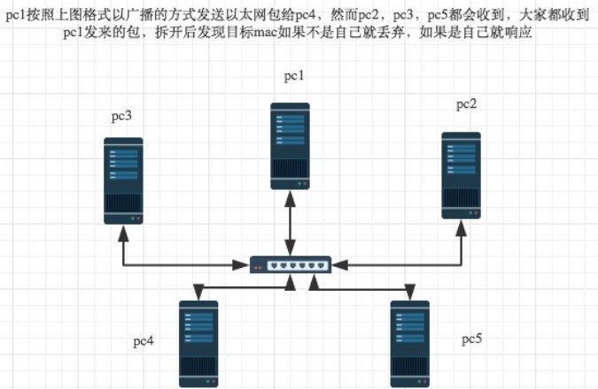
广播有什么问题吗?如果这个网络中有100台电脑,大家都在同一时间都在互相通讯,那是什么情况,
相当于村头挂着100个大喇叭,大家都在使劲喊,结果是要听清楚说的什么内容非常费劲儿
回到计算机中,100台电脑都在那儿广播,传输速度一定是有限的,严重浪费了网络资源
所以,处在局域网中间的设备即交换机(上图的中间那个小东西)
交换机不仅负责让网络中的计算机能够互相通信,还要优化网络传输,
如何优化呢?
当pc1想要与pc2通讯前
1.需要知道pc2的MAC地址,所以必须先将这个信息广播给所有的计算机,
2.这个信息必须先交给交换机,再由交换机广播出去,
3.pc2收到消息消息后发现目标MAC是自己,就回复数据给发送方,
4.而回复也必须先交给交换机,此时交换机就会记录pc2的MAC地址与网口号的对应关系存到自己的缓存中,
5.下一次在要给pc2发数据时从缓存中查找pc2的MAC地址,
6.如果找到了就直接单独给pc2发送,不在需要广播,
7.如果没有则重复之前的广播过程
这一优化功能称之为自动学习功能
第一次链接某计算机时 必须广播获取MAC地址
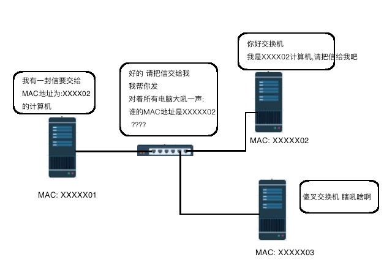
只要链接过一次 MAC地址就被交换机记录下了下一次就不用广播了
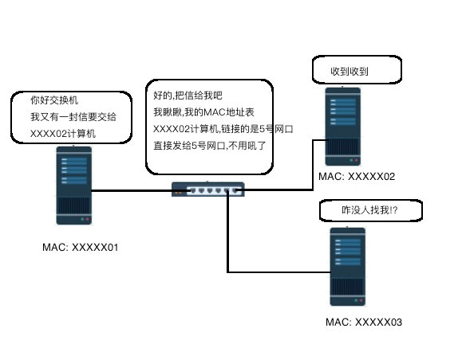
交换机的工作原理类似类似于早期的电话交换机,电话线打到总台,总台问你要找几号?,然后将电话线插到相应的口上
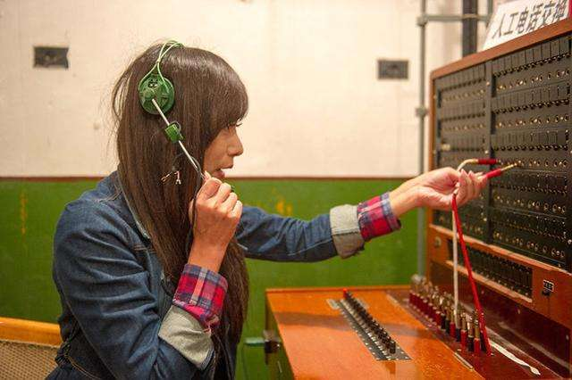
有了ethernet、mac地址、广播的发送方式，世界上的计算机就可以彼此通信了
世界范围的互联网是由一个个彼此隔离的小的局域网组成的，如果所有的计算机都采用以太网的广播方式来寻找其他计算机，那么一台机器发送的包全世界都会收到，这就不仅仅是效率低的问题了，这会是一种灾难,(广播风暴就是这么产生的)
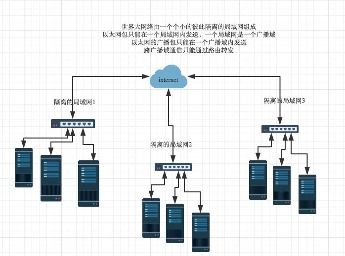
结论：必须找出一种方法来区分哪些计算机属于同一广播域，哪些不是，如果是就采用广播的方式发送，如果不是，就采用路由的方式（向不同广播域／子网分发数据包），mac地址是无法区分的，它只跟厂商有关;
网络层功能：引入一套新的地址用来区分不同的广播域／子网，这套地址即网络地址,网络地址到底长什么样,又是如何区分子网的?
IP协议是工作在网络层的协议,全称:Internet Protocol Address,翻译为互联网协议地址
ip协议定义的地址称之为ip地址，广泛采用的v4版本即ipv4，它规定网络地址由32位2进制表示
范围0.0.0.0-255.255.255.255
一个ip地址通常写成四段十进制数，例：192.168.10.1
网络号：标识子网
主机号：标识主机
IP地址的分类:
A类保留给政府机构
10.0.0.1 - 10.255.255.254
B类分配给中等规模公司
172.16.0.1 - 172.31.255.254
C类分配给任何需要的人
192.168.0.1 - 192.168.255.254
D类用于组播
E类用于实验
我们的电脑ip通常都是C类的,以192.168开头,正因为C类任何人都可以用
子网掩码是一个32位地址，用于屏蔽IP地址的一部分以区别网络标识和主机标识，并说明该IP地址是在局域网上，还是在远程网上。
它的网络部分全部为1，主机部分全部为0。比如，IP地址172.16.10.1，如果已知网络部分是前24位，主机部分是后8位，那么子网络掩码就是11111111.11111111.11111111.00000000，写成十进制就是255.255.255.0。
单纯的ip地址段只是标识了ip地址的种类，无法辨识一个ip所处的子网
例：192.168.10.1与192.168.10.2并不能确定二者处于同一子网,因为不清楚哪些位表示网络号,哪些表示主机号
知道”子网掩码”，我们就能判断，任意两个IP地址是否处在同一个子网络。方法是将两个IP地址与子网掩码分别进行AND运算（两个数位都为1，运算结果为1，否则为0），然后比较结果是否相同，如果是的话，就表明它们在同一个子网络中，否则就不是。
案例: 已知IP地址172.16.10.1和172.16.10.2的子网掩码都是255.255.255.0，请问它们是否在同一个子网络？两者与子网掩码分别进行AND运算，
172.16.10.1：10101100.00010000.00001010.000000001
255255.255.255.0:11111111.11111111.11111111.00000000
AND运算得网络地址结果：10101100.00010000.00001010.000000001->172.16.10.0
172.16.10.2：10101100.00010000.00001010.000000010
255255.255.255.0:11111111.11111111.11111111.00000000
AND运算得网络地址结果：10101100.00010000.00001010.000000001->172.16.10.0
结果都是172.16.10.0，因此它们在同一个子网络。总结一下，IP协议的作用主要有两个，一个是为每一台计算机分配IP地址，另一个是确定哪些地址在同一个子网络。
ip数据包也分为head和data部分，无须为ip包定义单独的栏位，直接放入以太网包的data部分
head：长度为20到60字节
data：最长为65,515字节。
而以太网数据包的”数据”部分，最长只有1500字节。因此，如果IP数据包超过了1500字节，它就需要分割成几个以太网数据帧，分开发送了。
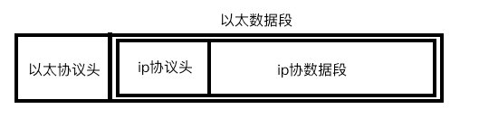
ARP协议的由来:IP是通常是动态分配的,是一个逻辑地址,而数据传输则必须依赖MAC地址,那如何才能通过IP得到对方的MAC地址呢? 这就需要ARP协议了
arp协议功能：广播的方式发送数据包，获取目标主机的mac地址
首先明确每台主机ip都是已知的,并可以通过子网掩码来判断是否属于同一子网
案例1：主机192.168.1.101访问192.168.1.102
是同一子网内 ARP请求帧内容:
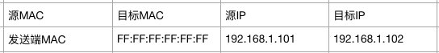
1.FF:FF:FF:FF:FF:FF是一个特殊的MAC地址 交换机在看到这个地址时会将这个数据向网内所有主机进行广播
2.192.168.1.102 收到ARP请求后 回复自己的MAC给 源MAC主机
3.发送方(192.168.1.101)收到回复后,会将对方的ip的MAC地址映射关系存储到缓存中,以便下次使用
ps:arp -a 可以查看ARP缓存列表
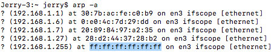
确定对方MAC地址后的数据帧内容:
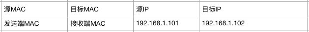
案例2：主机192.168.1.101访问192.168.111.101
交换机发现目标IP不在当前子网中,
1.交换机发起ARP请求,将目标IP设置为对方的网关IP,默认情况下,网关的主机号都为1; 所以接收方(192.168.111.101)的网关为192.168.111.1
发送方网关发起的ARP数据帧:
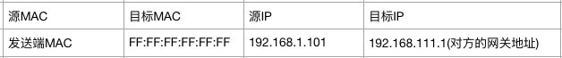
2.对方网关收到请求后发现ip是自己的ip则回复ARP请求,将其MAC地址告知发送方网关,
3.发送方网关将对方的网关的MAC地址与IP存储到自己的ARP缓存中,
4.告知发送方(192.168.1.101)对方网关的MAC地址,发送方同样将对方网关MAC与目标IP映射关系存储到,本机ARP缓存中
至此ARP请求结束可以开始传输数据
后续确定了MAC地址后发送的数据帧内容:
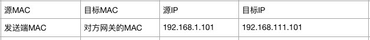
总结:ARP通过广播的方式来获取MAC地址, 不在同一子网时 ARP得到的时对方网关的MAC地址,数据到达对方网关后,由网关根据IP交给对应的主机,当然对方网关获取主机MAC也是通过ARP
ps:路由器 交换机都可以称之为网关!
传输层的由来:
通过物理层建立链接通道
通过数据链路层的MAC,可以定位到某个局域网中的某台主机,
通过网络层的IP地址,子网掩码,可以定位到全球范围某一局域网下的某台主机
那么问题来了:
一台计算机上是不可能只运行一个应用程序的,比如同时登陆qq和微信,那接收到的数据到底是交给微信还是qq呢?
答案就是:端口号,端口是需要联网的应用程序与网卡关联的编号
传输层功能：建立端口到端口的通信
补充：端口范围0-65535，0-1023为系统占用端口
可靠传输，TCP数据包没有长度限制，理论上可以无限长，但是为了保证网络的效率，通常TCP数据包的长度不会超过IP数据包的长度，以确保单个TCP数据包不必再分割。
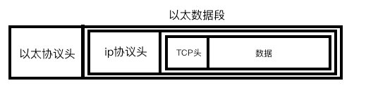
TCP之所以可靠,是因为在传输数据前需要三次握手确认建立链接
三次握手:
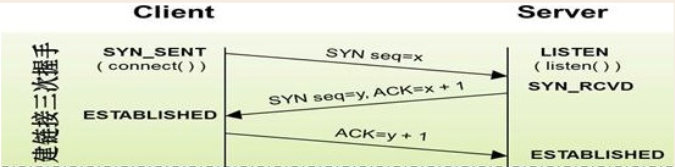
三次握手的过程实际上实在确认我发的你能收到,你发的我也能收到,从而保证数据传输的的可靠性,
链接是一个虚拟的概念,不实际存在,只要三次握手成功即表示连接建立成功!
问题是三次握手时的确能保障数据传输是可靠的,那么握手后的数据要如何保证传输成功呢?
TCP协议要求在发送数据后,必须接收到对方的回复信息才能确认数据成功发送,如果一段时内没有收到回复信息,会自动重新发送,如果重试的次数过多则表示链接可能已经中断!
四次挥手:
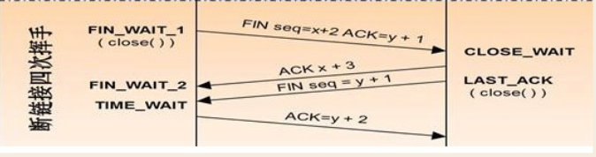
四次挥手的目的是保证双方的数据传输已经全部完成,同样是为了保证数据的完整性
总结
其优点很明显:能够保证数据传输是完整的
缺点:由于每次都需要传输确认信息,导致传输效率降低
场景:多用于必须保证数据完整性的场景,例如文本信息,支付信息等!
不可靠传输，”报头”部分一共只有8个字节，总长度不超过65,535字节，正好放进一个IP数据包。
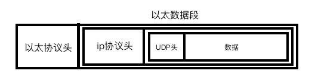
UDP协议采取的方式与TCP完全不同,其根本不关心,对方是否收到数据,甚至不关心,对方的地址是否有效,只要将数据报发送到网络,便什么都不管了!
总结
优点:由于不需要传输确认信息,所以传输效率高于TCP协议
缺点:传输数据可能不完整
场景:视频聊天,语音聊天等,不要求数据完整性,但是对传输速度要求较高
应用层由来：用户使用的都是应用程序，均工作于应用层，互联网是开放的，大家都可以开发自己的应用程序，用什么样的数据格式来传输，就需要由应用程序开发者自己来制定
应用层功能：规定应用程序的数据格式。
例：TCP协议可以为各种各样的程序传递数据，比如Email、WWW、FTP等等。那么，必须有不同协议规定电子邮件、网页、FTP数据的格式，这些应用程序协议就构成了”应用层”。
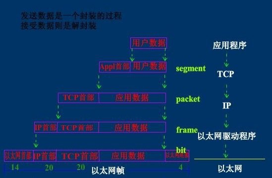
至此一连串高低电压就通过层层协议,变成了我们在应用程序中看到的各种数据